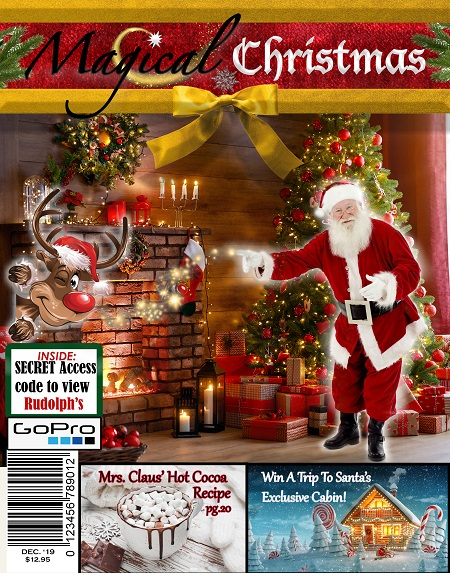
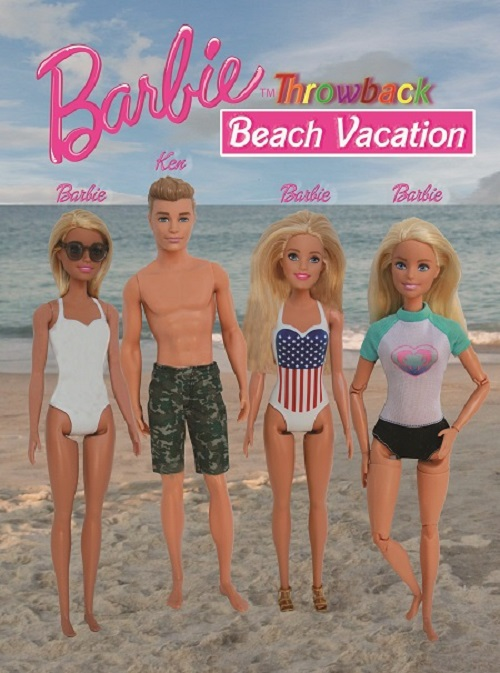
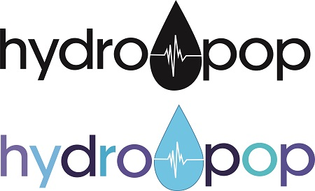

Projects
Christmas Magazine
 I created this Christmas Magazine Cover for a Photoshop assignment. I enjoyed creating this magazine and channeling a child’s Christmas fantasy. I used many different photos to create the magazine.
Barbie Ad
 This an assignment was completed in a prior Design class. The assignment was to redo an old ad from specific magazines. I chose to redo a 1960’s Barbie ad. I photographed my daughter’s Barbies and placed them on a beach scene. The beach scene takes place in Kure Beach , NC., where the photo was taken. The clouds were from a photo I took in the mountains. I enjoyed my exclusive photo shoot with my daughter’s old barbies and creating this piece.
Map of Washington DC National Mall
 This is a portfolio piece I created for an prior Illustrator class assignment. This piece features a Map of the National Mall in Washington DC. This map was created before many things have changed down there. The buildings I created are the Capital Building, Native American Museum, Hirshhorn Gallery, Washington Monument, National Museum of Natural History, Swekler Gallery, Freer Gallery, Smithsonian Castle. I had so much fun creating the various buildings and really learned some things in the process. I spent over 60 hours creating the various building.
This is a portfolio piece I created for an prior Illustrator class assignment. This piece features a Map of the National Mall in Washington DC. This map was created before many things have changed down there. The buildings I created are the Capital Building, Native American Museum, Hirshhorn Gallery, Washington Monument, National Museum of Natural History, Swekler Gallery, Freer Gallery, Smithsonian Castle. I had so much fun creating the various buildings and really learned some things in the process. I spent over 60 hours creating the various building.
Frozen Treat Label
 This is a sweet treat label I created for the sweet treat assignment in a prior Graphic Design Class. This product is called Hydro Pop. Hydro Pop is a rehydrating popsicle containing ingredients that build your body up and help it repair. This product is essential, whether you are dehydrated, sick or just want a guiltless sweet treat that also serves a benefit at the same time.